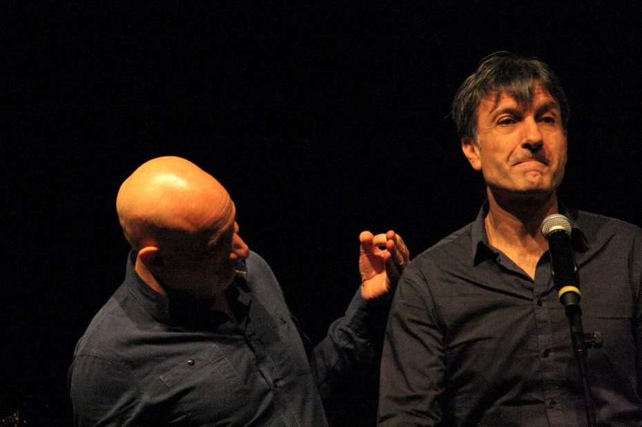
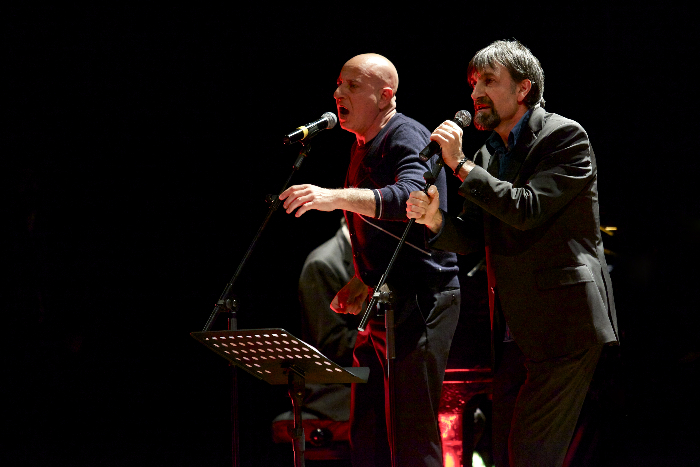
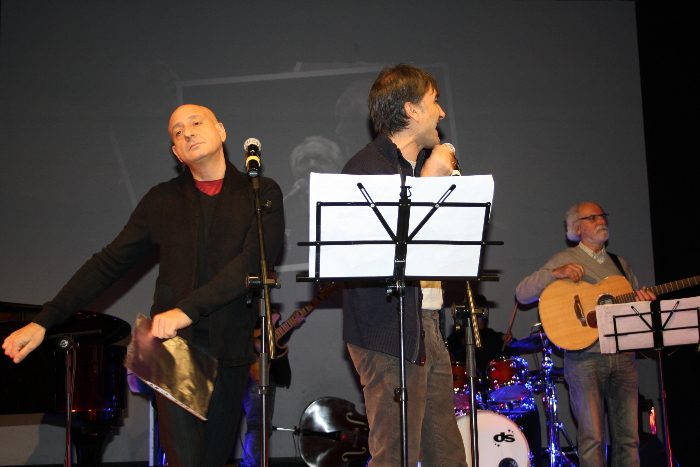

Il duo comico Andrea Bove e Enzo Limardi, più volte ospiti di Zelig e di spettacoli comici teatrali, allievi insieme a Osvaldo Ardenghi e Elena Paoletti di Enzo Jannacci al “Boglia Umana”, intervengono con stacchi di spendida comicità durante lo spettacolo.

mentre interpretano: "Silvano"

in veste di presentatori